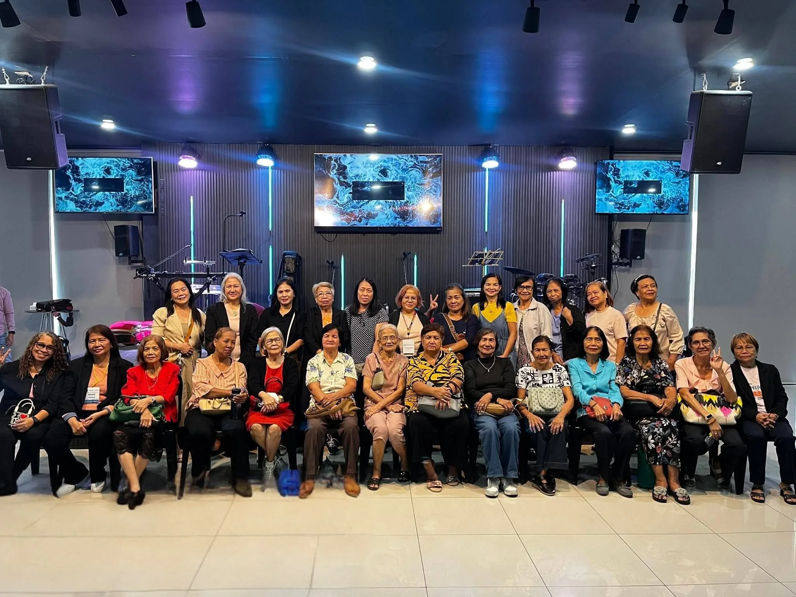
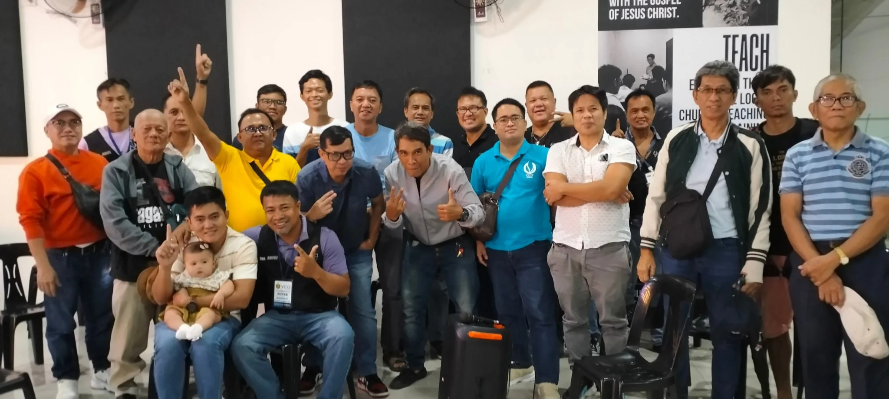
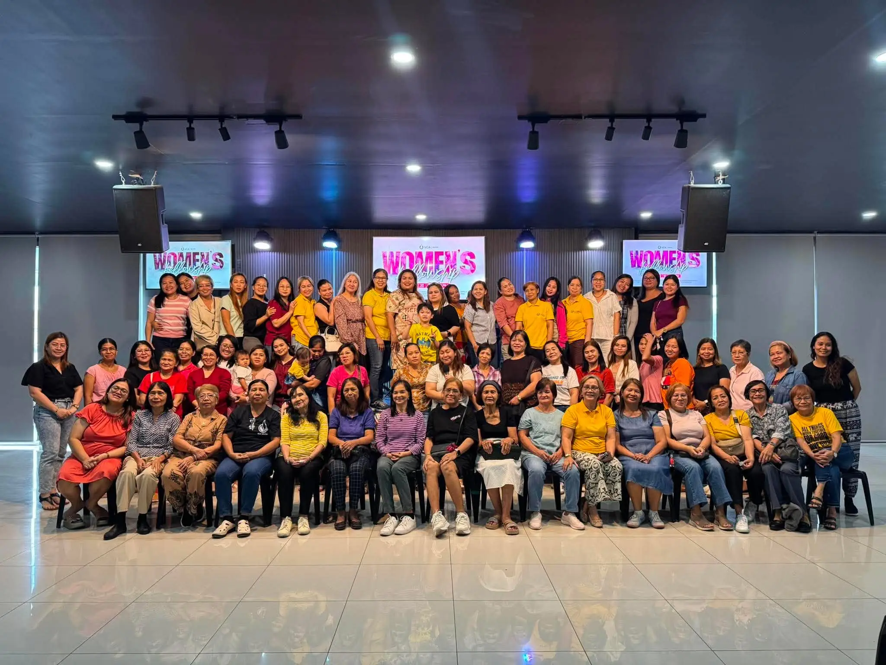
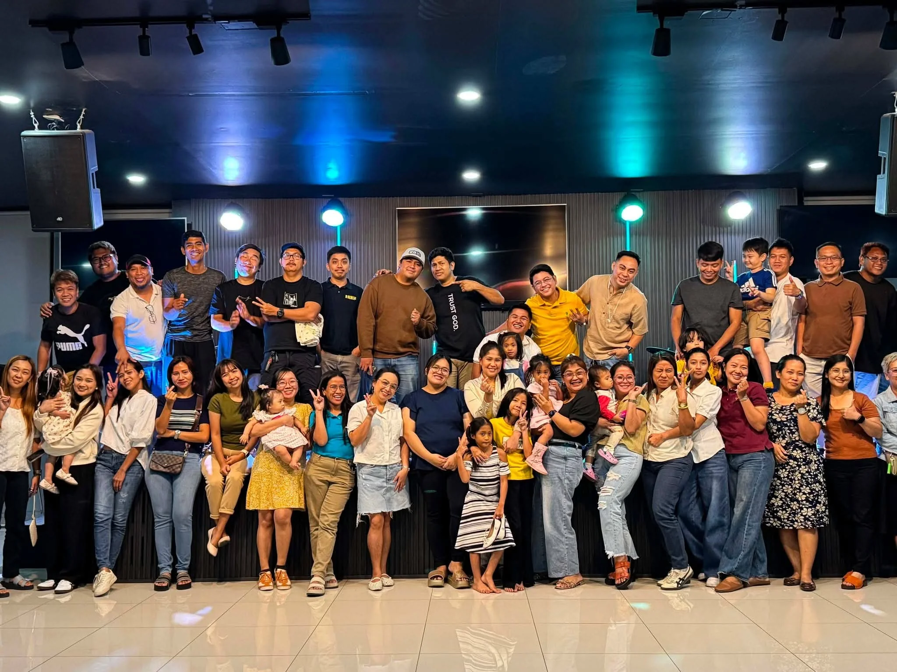
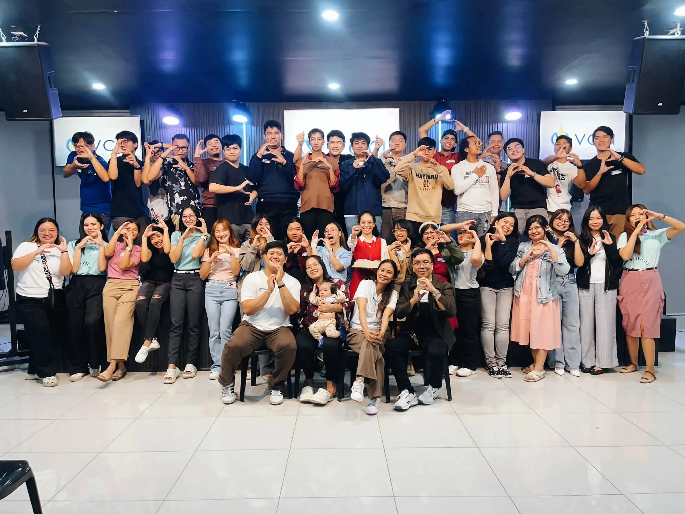
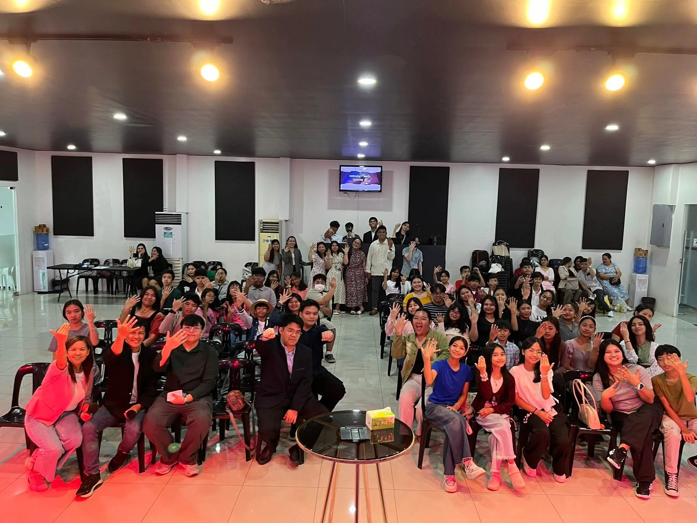

Fellowship
Life Is Better Together
Our Fellowship are places where believers build meaningful friendships, grow in faith, and encourage one another in Christ.
Community
Our Fellowship
We have different groups for every season of life. Find the fellowship where you belong.

Hebron Fellowship
A fellowship for adults seeking deeper spiritual growth and meaningful relationships.

Men of Victory
Empowering men to lead, serve, and grow spiritually as godly men who make a difference.

Women of Victory
Encouraging women to grow deeper in God's Word and support one another in faith.

Young Couples Fellowship
Strengthening Christ-centered marriages and helping young couples grow together in faith.

Single Adults Fellowship
Build meaningful friendships, grow in your faith, and discover God's purpose together with fellow single adults.

Risktaker Generation
A dynamic community for young people to build friendships and discover God's purpose.